0じゅんび:拡張機能を 入れる
ステップの 作品から はじめるときは、拡張機能は もう 入っているので この じゅんびは いらないよ。じぶんで 1から つくるときに やってね。
- Xcratch エディターを ひらく。
- 左下の「拡張機能を追加」ボタンを おす。
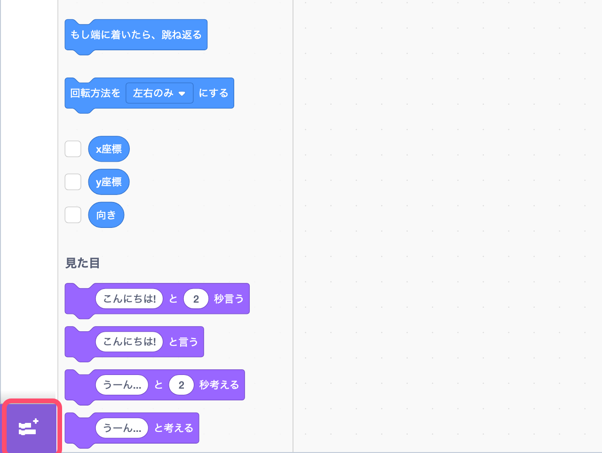
- いちばん はじめの「拡張機能を読み込む」を えらぶ。
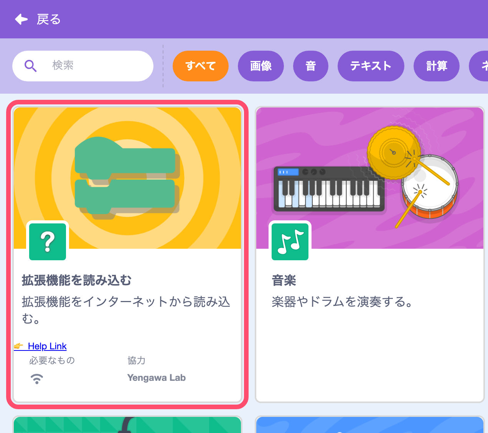
- つぎの URL を 入れて「OK」を おす。
https://0x48lab.github.io/xcx-strudel/dist/strudel.mjs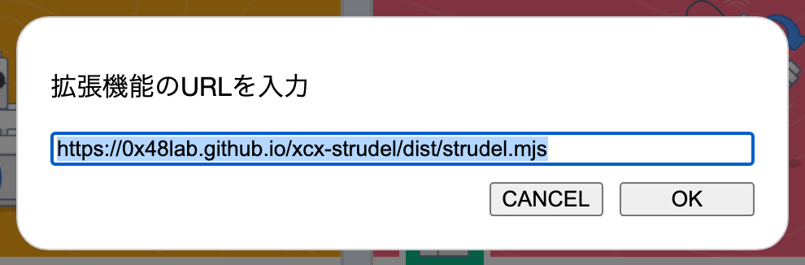
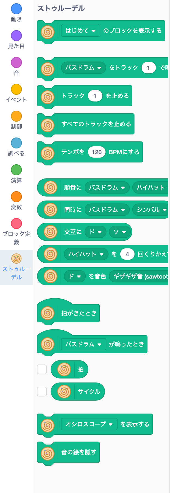
左に「ストゥルーデル」が ふえたら せいこう。うずまきの マークが ついた みどりの ブロックが ならぶよ。
さいしょは「はじめて」レベルの ブロックだけが 出ているよ。いちばん 上の ブロックで「ふつう」「マスター」に すると、ブロックが ふえるよ。
ブロックを ひらがなに したいときは、上の「設定」→「言語」で「にほんご」を えらんでね。
音が 出ないときは、ステージの みどりの はたを もう一度 おしてみてね。ブラウザは、画面を さわるまで 音を 出さない きまりが あるんだ。
1音を 1つ 鳴らそう
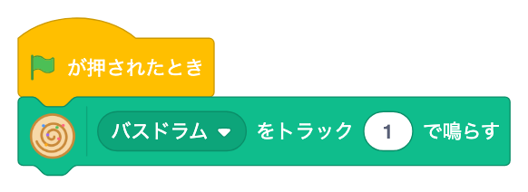
「〜をトラック〜で鳴らす」が いちばん 大事な ブロック。みどりの はたを おすと、バスドラムが「ドン、ドン…」と ずっと くりかえし 鳴るよ。止めるときは 赤い ボタン。
▼ を おすと、ほかの 音を えらべるよ。ドラムの 音と、ドレミの 音と「休み」が あるよ。
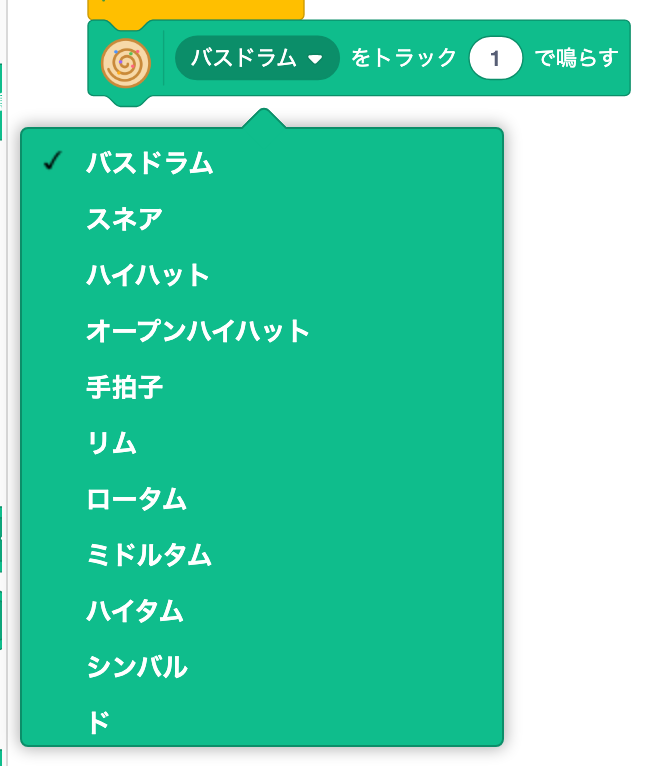
- スネアや 手拍子に かえてみよう。鳴らしたまま かえても いいよ。
- 「ド」を えらぶと、どんな 音が するかな?
2順番に ならべよう
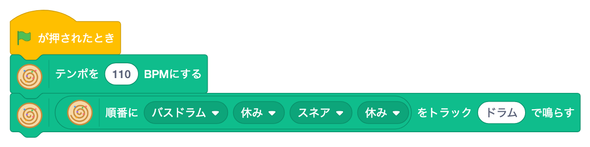
「順番に」ブロックを「鳴らす」の ▼ の ところに はめこむと、4つの 音が じゅんばんに 鳴るよ。「ドン・ッ・タン・ッ」の ビートの できあがり。
サイクルって なに?
Strudel では、くりかえしの ひとまとまりを「サイクル」と よぶよ。「順番に」に 入れた 音は、1サイクルの 中に ぴったり おさまるように ならぶ。だから 4つなら 4等分、8つなら 8等分に なるよ。はやさを かえたいときは「テンポを〜BPMにする」を つかってね。
トラックの 名前(ここでは「ドラム」)は、じぶんで すきに つけていいよ。
- 「休み」を ハイハットに かえると、どう かわるかな?
- テンポを 80 や 140 に してみよう。
3トラックを かさねよう

「鳴らす」ブロックを もう1つ つなげて、ちがう トラック名を つけると、2つの 音が いっしょに 鳴るよ。バンドで 楽器が ふえていく かんじだね。
「〜を〜回くりかえす」は、1サイクルの 中で 同じ 音を なんども 鳴らす ブロック。ハイハットを 8回 きざむと、ぐっと ノリが よくなるよ。
同じ トラック名で もう一度 鳴らすと、前の 音と 入れかわるよ。これは つぎの ステップ5で つかうよ。
- くりかえす回数を 16 や 3 に してみよう。
- 「同時に」ブロックで、バスドラムと シンバルを いっしょに 鳴らしてみよう。
4メロディを つくろう
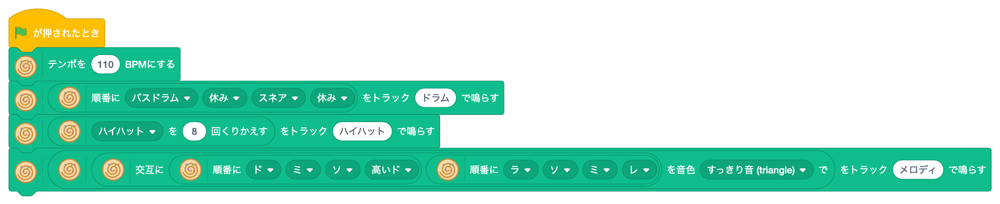
3つめの トラック「メロディ」を ふやしたよ。ブロックが いれこに なっているので、内がわから 見ていこう。
- 「順番に ド ミ ソ 高いド」と「順番に ラ ソ ミ レ」で、2つの フレーズを つくる。
- 「交互に」に 2つを 入れると、1サイクルごとに こうたいで 鳴るよ。
- 「〜を音色〜で」で、音の しゅるい(ねいろ)を えらぶ。すっきり音、ギザギザ音、ピコピコ音、やわらかい音 などが あるよ。
- 音色を「ギザギザ音」や「ピコピコ音」に かえてみよう。
- ドレミを かえて、じぶんの メロディを つくろう。
5キーで 曲を かえよう
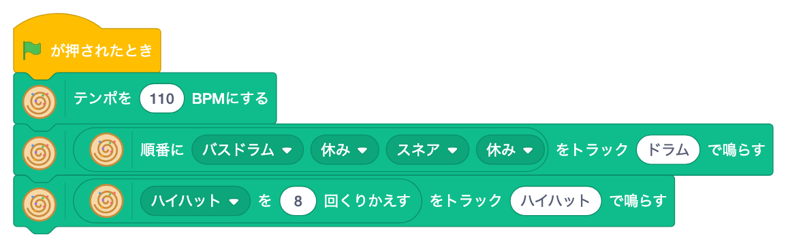
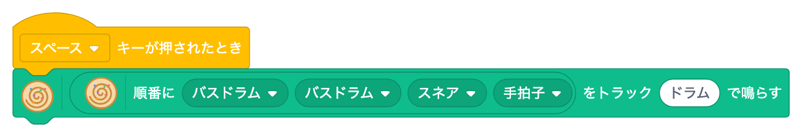
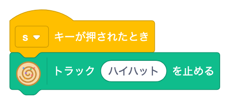
演奏しながら 曲を かえるのが、Strudel の いちばん 楽しい ところ。これを「ライブコーディング」と いうよ。
- スペースキー:「ドラム」トラックに ちがう リズムを 鳴らす。同じ トラック名なので、前の リズムと 入れかわるよ。
- s キー:「トラック〜を止める」で ハイハットだけ 止める。
- 0 キー:「すべてのトラックを止める」。
入れかわるのは、つぎの サイクルの はじめ。だから いつ キーを おしても、リズムが ずれないよ。
キーを つかうときは、さいしょに ステージを 1回 クリックしてね。
- キーを ふやして、リズムを 3しゅるい 切りかえられるように しよう。
6音を 目で 見よう
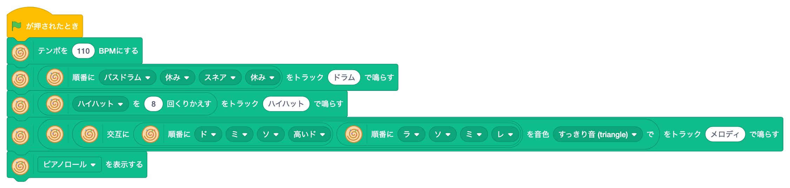
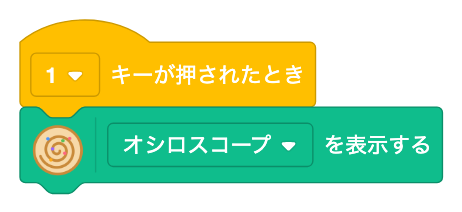
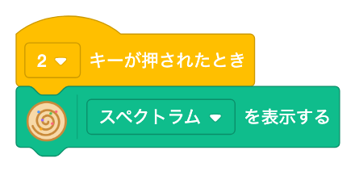
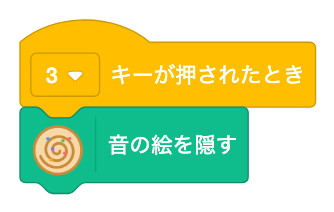
「〜を表示する」で、鳴っている 音を ステージに 絵で 出せるよ。
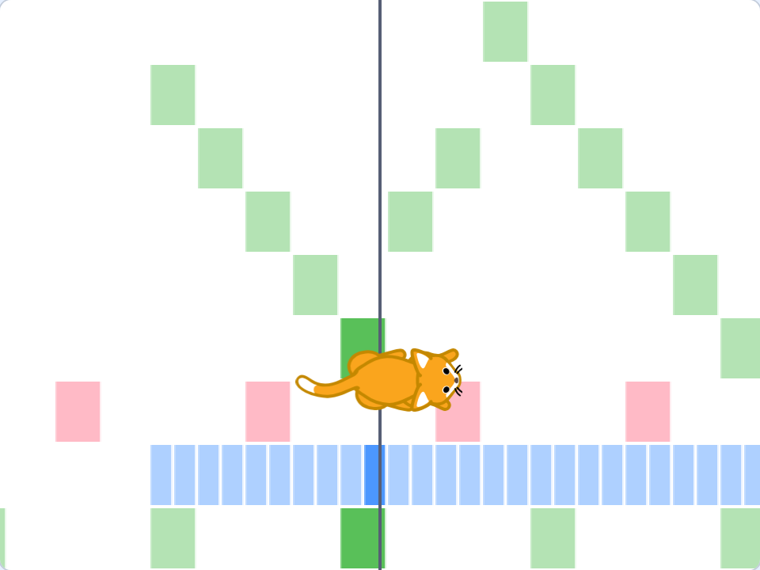
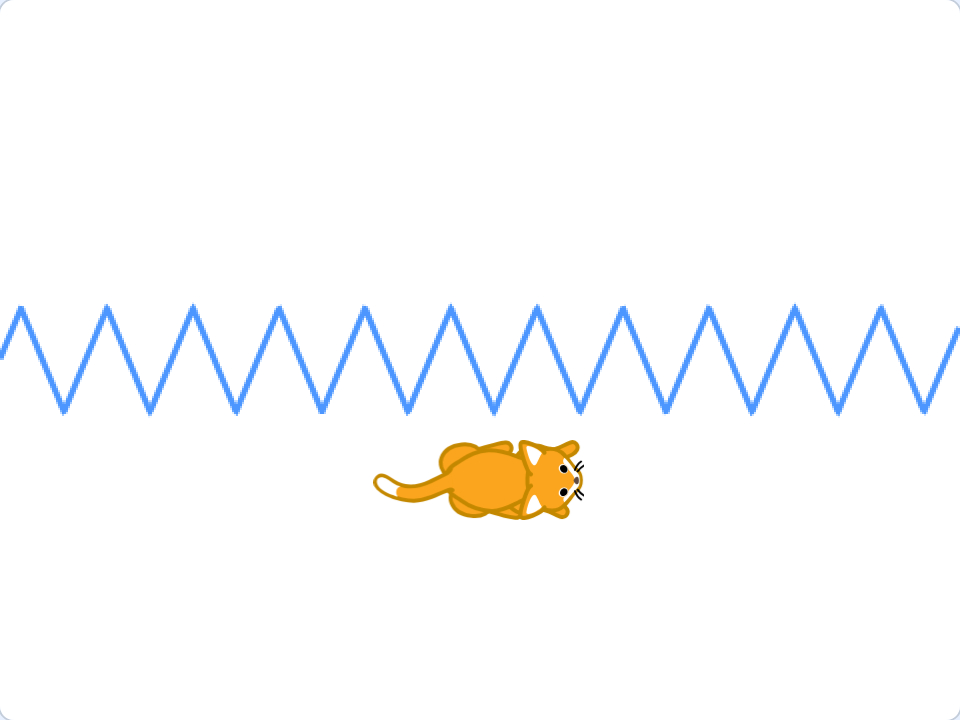
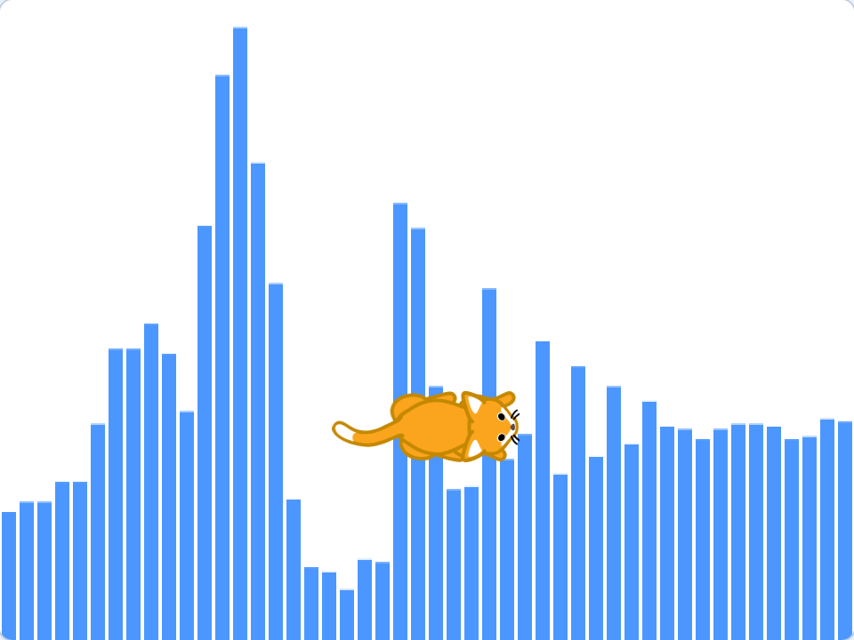
ピアノロールは、まんなかの たての 線の ところが「いま」。上に あるほど 高い 音だよ。音の 絵は スプライトの うしろに 出るので、ねこも ちゃんと 見えるよ。
7ねこを おどらせよう
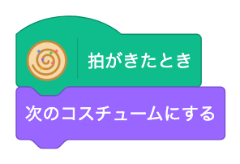
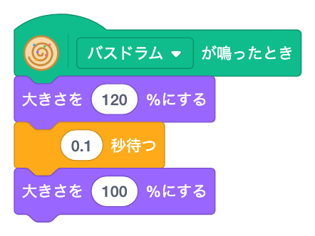
音に あわせて スプライトを うごかす ブロックが あるよ。
- 「拍がきたとき」:はくごとに 動く。コスチュームを かえると、ねこが 足ぶみするよ。
- 「〜が鳴ったとき」:えらんだ ドラムが 鳴るたびに 動く。バスドラムで ジャンプ、スネアで 色を かえる、なども できるよ。
いつもの Scratch の ブロックと 組みあわせられるのが、この 拡張機能の いいところ。
- スネアが 鳴ったら「色の効果を 25 ずつ変える」に してみよう。
- 「拍」や「サイクル」の 値を つかって、ねこを 動かしてみよう。
8ふつうレベル:ミニ記法・効果・音階
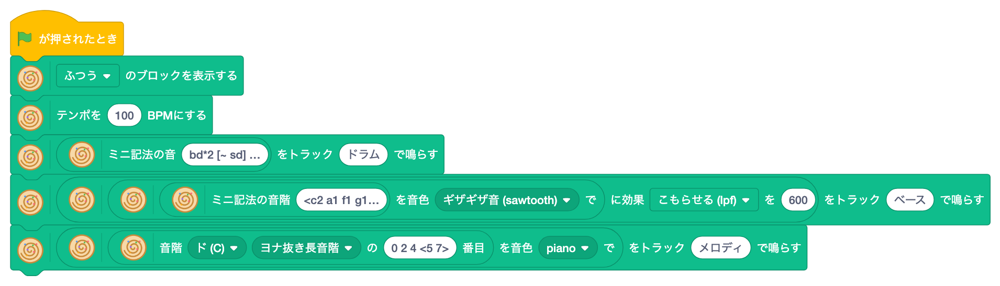
いちばん 上の ブロックを「ふつう」に すると、ブロックが ふえるよ。
ミニ記法
「ミニ記法の音」は、Strudel と 同じ 書きかたで 音を ならべる ブロック。この 作品の ドラムは bd*2 [~ sd] <hh oh> sd、ベースは <c2 a1 f1 g1>*2 だよ(ブロックの 中では 長い 文字は「…」で 省略されて 見えるよ)。
| 書きかた | いみ | れい |
|---|---|---|
bd sd | スペースで くぎると 順番に 鳴る | bd hh sd hh |
~ | 休み | bd ~ sd ~ |
*2 | その音を 2回に ふやす | hh*8 |
[ ] | 1つ分の 時間に つめこむ | bd [sd sd] |
< > | サイクルごとに 1つずつ こうたい | <bd cp> |
, | 同時に 鳴らす | bd*4, hh*8 |
効果と 音階
- 「〜に効果〜を〜」:こもらせる(lpf)、エコー(room)、ディレイ など。ベースは「こもらせる 600」で やわらかい 音に しているよ。
- 「音階〜の〜番目」:音階の 何番目の 音かを 数字で 書く。ヨナ抜き長音階なら、どの 数字でも きれいに 聞こえるよ。音色の「piano」は、本物の ピアノの 音を 自動で 読みこむよ。
Strudel の コードに する
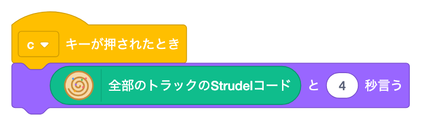
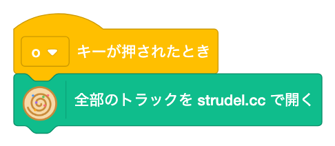
くんだ ブロックは、本物の Strudel の コードに できるよ。「全部のトラックを strudel.cc で開く」を つかうと、strudel.cc で 同じ 曲が 鳴るよ。ブロックの つぎは、コードに チャレンジだ。
9マスターレベル:アシッドと トランスゲート
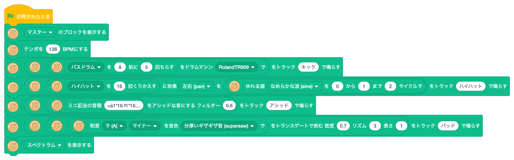
「マスター」に すると、クラブミュージックで つかう わざが つかえるよ。
- 「〜を〜拍に〜回ちらす」:8拍に 5回、のように 音を できるだけ 均等に ちらす(ユークリッドリズム)。世界中の 民族音楽に 出てくる リズムだよ。
- 「〜をドラムマシン〜で」:TR-909 などの 有名な ドラムマシンの 音に する。
- 「ゆれる値」:数字の かわりに 入れると、値が 波のように ゆれる。ここでは ハイハットが 左右に ゆれるよ。
- 「アシッドな音にする」:ビヨビヨした ベースの 音(TB-303 ふう)。
- 「トランスゲートで刻む」:のばした 和音を 細かく 刻む。「リズム」の 数字を かえると、刻みかたが かわるよ。
- 「回ちらす」の 数を 3 や 7 に してみよう。
- トランスゲートの「リズム」を 0〜20 で かえて、すきな 刻みを さがそう。